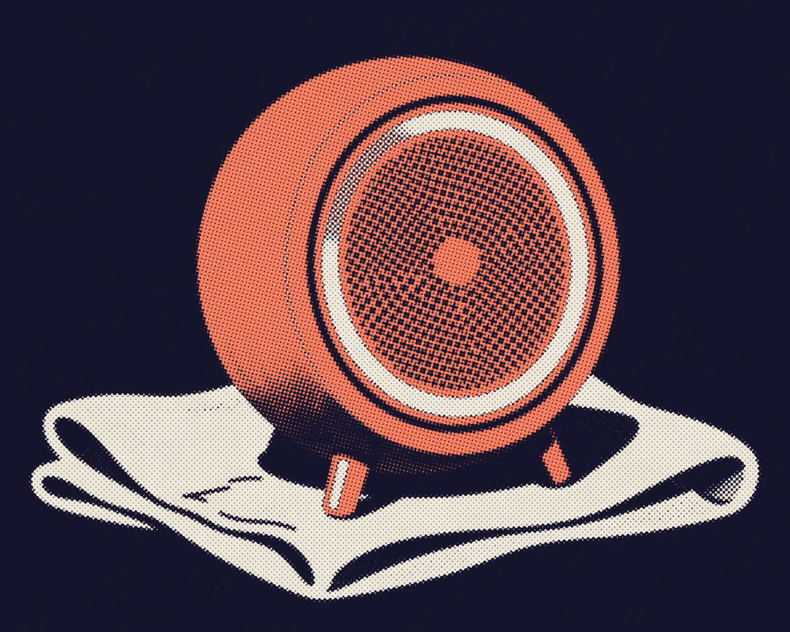
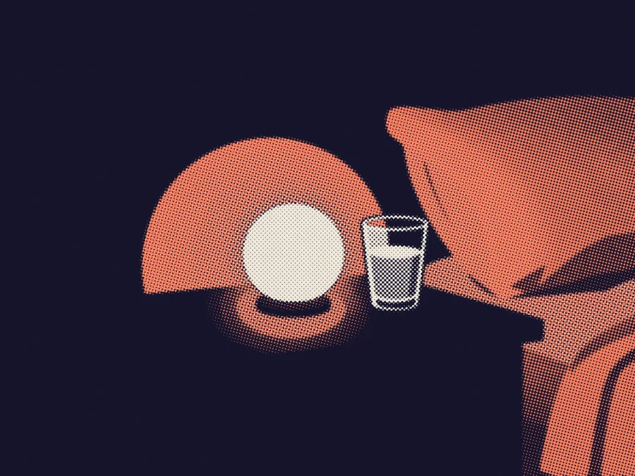
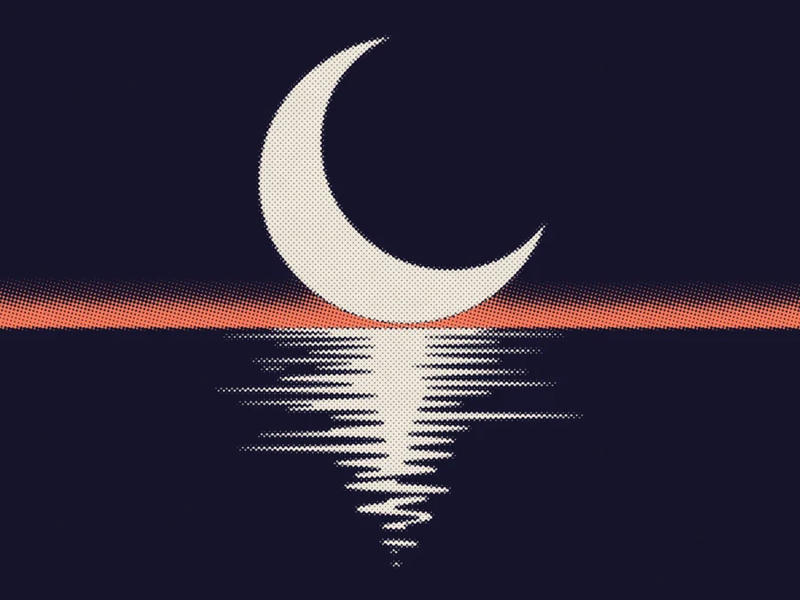
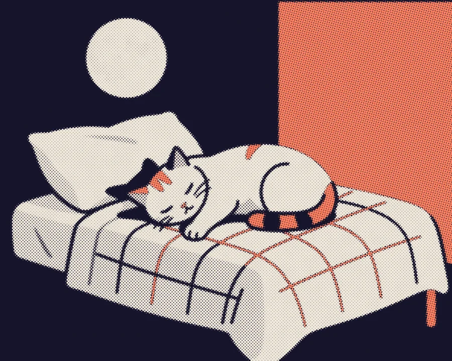

Recorded on four coasts
A real sea, never a loop.
Eleven nights of shoreline, recorded on quiet beaches and woven together live, so no wave ever comes round twice.

A bedside speaker that plays a living sea and slows its waves to your breathing until you are under. No screen, and no app to open at midnight.
Tidelow hears the rhythm of your breathing from across the room and lets the sea follow it down. Once you are asleep it fades to a hush and stays there until morning.

A wool-covered sphere the size of an orange, one ring of light that dims as you do, and a driver tuned for low, slow water.
Eleven nights of shoreline, recorded on quiet beaches and woven together live, so no wave ever comes round twice.

The ring fades with your breathing and is out before you are.

Recorded water with its own swell and lulls, mixed live so the sound never repeats.

When your breathing settles, it holds a hush through the night and wakes you with the tide coming in.
I used to count sheep. Now I count waves, and I never get past forty.Hanne, an early tester (a fictional quote)